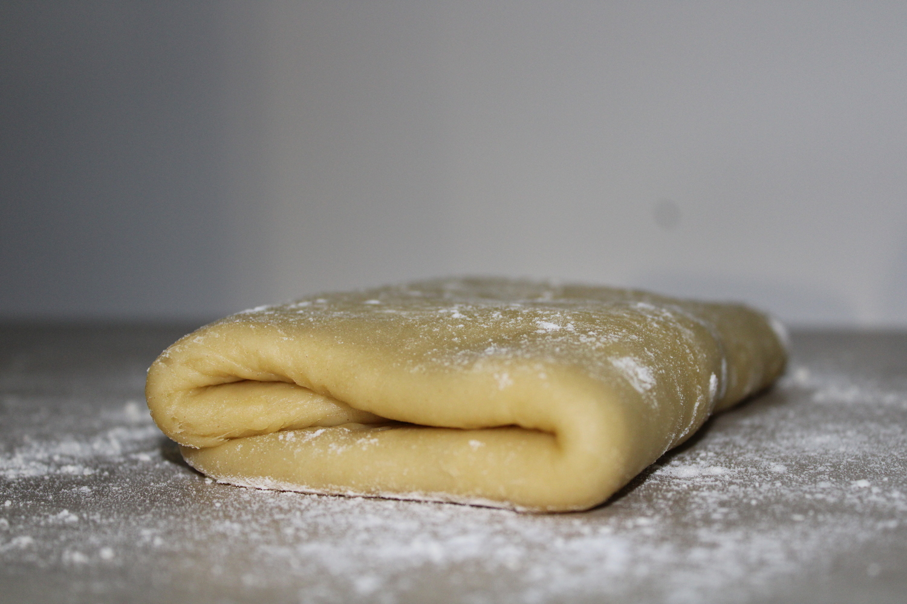

Pâte brisée 
Cette recette de pâte brisée est idéale pour faire des tartes, aussi bien salées que sucrées.
| Préparation | Repos | Niveau | Quantité |
|---|---|---|---|
| 10 min | 30 min | Facile | 1 tarte |
Ingrédients
| Farine | 250 g |
| Huile d'olive | 65 g |
| Eau | 90 g |
| Levure chimique | 1 c.à.c |
| Sel | 1 pincée |
Préparation
- Dans un saladier, mélangez la farine, la levure chimique et le sel.
- Ajoutez l'huile d'olive et l'eau progressivement tout en mélangeant, en finissant par pétrir la pâte à la main.
- Après avoir formé une boule avec la pâte, recouvrez le saladier d'un torchon et laissez reposer à température ambiante pendant 30 minutes.
- Vous pouvez ensuite étaler la pâte à l'aide d'un rouleau à pâtisserie, en saupoudrant de temps en temps votre plan de travail et la pâte, afin que celle-ci ne colle pas. Vous avez à présent seulement besoin de placer votre pâte dans un moule et, après l'avoir piquée avec une fourchette, de la garnir et d'enfourner !
Mon conseil
Pour faire une tarte sucrée, vous pouvez tout simplement ajouter 2 cuillères à soupe de sucre lors de la première étape.